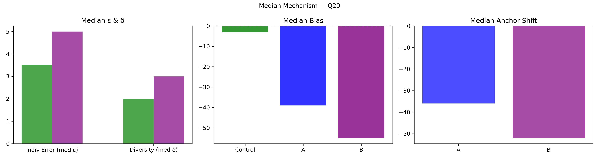

Question Q20: Big 5 Marathon! In °F, what will the temp. be at 11 AM local time in Pretoria, South Africa tomorrow?
Super Summary
================================================================================
QUESTION Q20: 03_Export_0627_stats_829WRIsLd4.csv
Big 5 Marathon! In °F, what will the temp. be at 11 AM local time in Pretoria, South Africa tomorrow?
Truth = 67.0
N_ctrl = 144 N_ext = 61
================================================================================
[1] COLLECTIVE ERROR (E)
Control Ec: 2.5206 ± 0.8707
CI = [ 0.8197 , 4.2791 ]
Extremized Ex: 5.1087 ± 0.6641
CI = [ 3.8352 , 6.4107 ]
Difference (Ec - Ex) = -2.5881
Percent Change = -102.68%
Bootstrap:
P(Ex < Ec) = 0.0100
→ 1.0% of samples show extremized < control
[2] INDIVIDUAL ERROR (ε)
Control mean ε = 4.9028
Extremized ε = 5.7541
Percent Change = 17.36%
Welch t-test: t = -1.173, p = 0.2429
Cohen's d = -0.170
[3] DIVERSITY (δ)
Control SD = 6.6791
Extremized SD = 5.2376
Percent Change = -21.58%
Levene p = 0.9808
[4] ANCHOR DIAGNOSTICS
Anchor A = 50.0
Anchor B = 68.0
A_effective = False
B_effective = True
[5] EQUATION 6 CHECK
w_L = 0.3915 w_H = -0.0379
Delta = -28.4376
Criterion_L = False Criterion_H = False
Meets both = False
[6] δ–ε–E SCENARIO
Scenario: δ:down, ε:up, E:up
Mechanism Explanation: Anchoring backfires: predictions collapse around a misleading anchor, reducing diversity but worsening accuracy.
================================================================================
FINAL INTERPRETATION (with actual figures)
================================================================================
For Q20, collective error shifted from 2.52 to 5.11 (-102.68%). Bootstrap = 1.0%. Individual error changed by 17.36%, diversity changed by -21.58%. Scenario = δ:down, ε:up, E:up. Equation 6 feasibility = False.
================================================================================
Median Mechanism Plot
